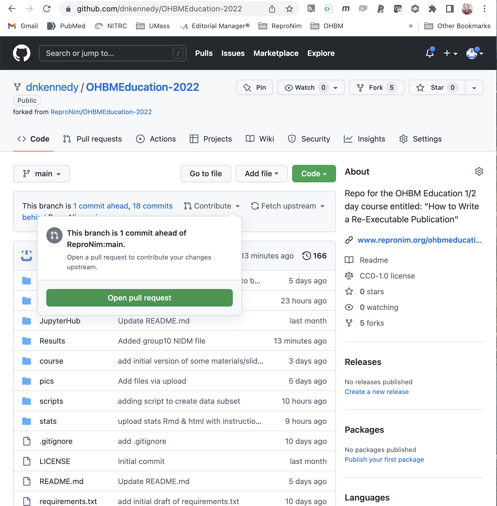

The Publication Exercise for the course
Contents
The Publication Exercise for the course¶
Prerequsites¶
Don’t have an account on github ? please create one on GitHub
You will need a token - please navigate to your account (top right) and then go to “developer settings” and “personal access token” create a token - click on “repo” and take the token to do things like git push (see below).
For the exercises below it will also be important to have a ‘fork’ of the “ReproNim/OHBMEducation-2022” GitHub repository. to do this:
Navigate your browser to https://github.com/ReproNim/OHBMEducation-2022
Select ‘fork’ in the row of operations at the top of the window
Select ‘Create Fork’
You now have you own copy of the couse materials to use in the future.
JupyterHub¶
JupyterHub provides the computational platform we will use. We can all use a common platform with all our needed software prerequisites and environment pre-set. This eliminates the hassle of making all this work on everyone’s local computers. However, the downside is that you may not be able to replicate this example ‘at home’ unless/until you solve the software prerequisites on your own computational platform. That’s OK, ReproNim is here to help after the course with your own ‘home’ computational platform.
Meet your ReproHub¶
The ReproHub is hosted at a URL that we will give you in class. Point your browser to this url. You will use your GitHub authorization in order to log in. Once you are in the site, you will see the ‘Launcher’ from where you can ‘launch’ many ships. For now, we’ll want a command line “terminal”. Click that icon to get started.
Amongst the first things we need to do on this platform is let git know about who you are. To do this:
Set your username: git config --global user.name "FirstName LastName"
Set your email address: git config --global user.email "YourUserName@example.com"
The Steps¶
We will do our re-executable publication in a sequence of steps that are designed to accomplish all the necessary tasks in the timeframe allocated by our course.
Create a GitHub Repo for your Publication¶
Note We’re not going to do this today, but in the event of a ‘real’ paper we would do the following.
Our final publication should include a GitHub repository, where we can connect all the parts of our publication in a central, shared location. A GitHub repo is FAIR: Findable, Accessible, Interoperable and Reusable. Since this will be ‘self published’ and not peer-reviewed, we really should think of this as a pre-print of our ‘publication’. Were this an actual publication, we would create a more formal document, complying with the norms of traditional scientific publication, and submit to a peer-reviewed journal (after depositing the preprint as well).
Pre-Registration¶
In this case, we do have a specific set of hypotheses we are testing. In general, we should pre-register this plan (or consider a registered report) but those steps are considered to be outside the scope of what we can accomplish in our time together. We highly recommend you read more about this topic here.
Collect Data¶
In this case we will use pre-collected data. Specifically, each of you will be assigned a subset of the OpenNeuro ds001907 collection. The description of this study can be found at the OpenNeuro website, and this data was published in the following data paper. There are 46 subjects in this overall dataset (25 healthy aging, 21 Parkinson’s Disease). There are many other potential sources of Parkinson’s disease data: NITRC-IR, Parkinson’s Progression Markers Initiative, OpenNeuro, etc.
Data Subset¶
Each student (or student group) will be assigned a subset of the above dataset for their analysis. This is both for practical purposes, as there is time to do only a limited amount of data analysis in this course, but also for didactic purposes, so that we can share (and aggregate) our individual results in support of both a meta analysis amongst our various subsets and a mega analysis by combining all of our individual results together. For our purposes here, each student/team will get 5 randomly assigned typically developing subjects and 5 subjects with Parkinson’s Disease (PD). We know, ‘your study’ will be under-powered, but, frankly, it’s still underpowered even if you have 100’s of subjects, we’ll talk about that separately.
Let’s Do It!¶
On the JupyterHub in your home directory (i.e. the prompt in your terminal window will look something like jovyan@jupyter-YourGithubUsername:~$, let’s make a directory for your data:
cd
mkdir my_data
cd my_data
Now we are going to ‘fork’ (make a copy) of our specially prepared reduced version of the ds001907 dataset. To do this, we will
In your browser open up a new tab to the dataset’s repo: https://github.com/ReproNim/ds001907-EDU
‘Fork’ this dataset to your own GitHub account.
Now, on the JupyterHub in your my_data directory, let’s clone your fork of this dataset, please replace “YOUR-GITHUB-LOGIN” with your GitHub username:
cd ~/my_data
git clone https://github.com/<YOUR-GITHUB-LOGIN>/ds001907-EDU.git my_ds001907-EDU
You now have the ‘complete’ dataset in the my_ds001907-EDU directory.
Now, you can teach git to remember you, to save typing later on:
cd my_ds001907-EDU
git config credential.helper 'cache --timeout=3600'
Let’s create your own specific working subset from this master dataset. You (or your working group) will receive a “Group_Number” (i.e. Group_10) which assigns you a set of 10 cases for your working at the class. We then need to:
Remove the sub-* directories from the master data set (that you forked and cloned to your home directory) that are not in your assinged dataset
Remove the lines of the participants.tsv file that are not for your subjects (your assigned 10 cases)
You can see the cases that are in your group with the following command:
more ~/Exercise-OHBM2022/Exercise/Groups/Group_10
which should generate output like:
Group 10
sub-RC4101
sub-RC4128
sub-RC4129
sub-RC4130
sub-RC4131
sub-RC4206
sub-RC4207
sub-RC4208
sub-RC4210
sub-RC4211
We have a simple ‘helper script’ that will create this subset of directories for you.
python ~/Exercise-OHBM2022/scripts/data_subset.py -g <YourGroupNumber>
Next, Let’s confirm that your working subset is still have a happy BIDS dataset. The dataset you cloned (which is actually a DataLad dataset, which we will discuss later) so let’s clean up the DataLad aspect of this new data subset and run the BIDS validator (locally as a Singularity container application, in a way that deals with a DataLad dataset):
datalad save -m "My new dataset" .
And then actually run the validator (using singularity):
cd ~/my_data
singularity exec --bind $PWD/my_ds001907-EDU:/data /shared/sing/bids_validator.simg bids-validator /data --ignoreSymlinks --ignoreNiftiHeaders
This dataset will (hopefully) pass, and if it does, that outcome will be reported to you (“This dataset appears to be BIDS compatible.”) by the validator. You can ignore the warnings about “…Tabular file contains custom columns…” for now.
Great, you now have a valid BIDS (and DataLad) dataset.
Now you can now “publish” this dataset by pushing it back to your GitHub repo:
cd ~/my_data/my_ds001907-EDU
git push
Note: Git may or may not ask you for your username and password, but by password, it rally means the token that you saved earlier, depending on how you have your git account setup. Make sure you have your token…
Congratulations! You have now published your dataset by putting it in a github repo, where it is now both findable and citable.
Now that we have our dataset, and have it ‘published’, we can prepare to use this dataset in our analysis. We will do this in two main steps: 1) setting up our analysis environment, and 2) running the analysis.
Setting the Analysis Environment Commands¶
cd
datalad create -c text2git my_analysis
cd my_analysis
Install all desired “components”
datalad install -d . -s https://github.com/<YOUR-GITHUB-LOGIN>/ds001907-EDU.git rawdata
datalad install -d . -s https://github.com/ReproNim/containers containers
mkdir code
datalad install -d . -s https://github.com/proj-nuisance/simple_workflow code/simple_workflow
Make some working space and tell git to ignore the working space
mkdir workdir
echo workdir > .gitignore
datalad save -m "ignore workdir" .gitignore
Data Analysis¶
We need to execute an analysis that supports the hypotheses we are considering.
The Hypotheses¶
Our hypotheses are drawn from the findings of the ENIGMA Consortium. Specifically, the ENIGMA Parkinson’s Disease subgroup have identified a number of salient structural findings, reported in this paper. From these findings, we have selected the following a priori hypotheses:
ICV is slightly larger in PD patients
larger thalamic volumes (esp in earlier stage PD)
smaller putamen volumes
We can assess these questions using software that will perform a volumetric analysis of the T1 structural imaging. For an efficient volumetric analysis, we have selected the FSL software, using the Brain Extraction Tool we can determine total brain volume, using FAST, we can get tissue (gray, white, CSF) volumes, and FIRST yields subcortical structural volumes. The run time for each subject should be approximately 10 minutes.
The Container¶
It turns out we already have a container that runs the set of FSL tools we need (coloquially know of as the ‘simple1’ container), it was used in the paper Ghosh, et al, “A very simple, re-executable neuroimaging publication”, and is accessible already through the DataLad and ReproNim/Containers infrastructure.
datalad containers-run \
-n containers/repronim-simple-workflow \
--input 'rawdata/sub-RC4*/ses-1/anat/sub-*_ses-1_T1w.nii.gz' \
code/simple_workflow/run_demo_workflow.py \
-o . -w data/workdir --plugin_args 'dict(n_procs=10)' '{inputs}'
Congratulations! You have now run a completly re-executable analysis to venerate volumetric results on your anatomic data! Now, let’s do someting with these results.
First, let’s get all of our stuff represented in a more completly standard representation.
Standards¶
Imaging Data¶
Our raw imaging data is in pretty good shape. It is in BIDS already (although we did have a warning about not having a participants.json ‘dictionary). An issue with BIDS, however, is that even compliant BIDS are not completely ‘self described’. The “diagnosis” field, for example, could have been called anything (dx, DIAG, condition, etc.), and therefore ‘someone’ would still need to tell you what this field actually is, if they handed you this file. NIDM was developed to provide a standardised way to represent what our various data fields ‘mean’. For ‘diagnosis’, to continue the example, I could associate that field with a reference to a definition of what we mean for this field, like this link. So, our next step is to represent our imaging data in the NIDM representation.
In the my_analysis directory…
bidsmri2nidm -d $PWD/rawdata -o $PWD/rawdata/my_nidm.ttl
You will need to answer a number of questions about your data. Details of an example session are shown here. You may get some ‘warnings’ don’t worry about these (including regarding a missing INTERLEX API key). This process generates, in your rawdata BIDS directory a ‘participants.json’ file and the ‘my_nidm.ttl’ file.
Standardized Representation of the Results¶
The volumetric results for each structure measured are packaged in a .json representation. This .json can be transferred into the NIDM semantically encoded results (.ttl). First, lets generate a listing of your cases:
ls -d1 rawdata/sub-* | xargs -n 1 basename > cases.txt
cases.txt now lists your cases. Next, looping over all of your cases, let’s convert the .json into NIDM and merge it into your main NIDM representation:
At the moment (6/9/22) this will fail, since we don’t have fslsegstats2nidm installed globally. IF you are checking this, you can install it
for yourself by pip install https://github.com/ReproNim/fsl_seg_to_nidm/archive/refs/heads/master.zip
BASH
for i in `cat cases.txt`;
do
echo "Working on $i file...";
fslsegstats2nidm -f $PWD/${i}_ses-1_T1w/segstats.json -subjid $i -o $PWD/file.ttl -n $PWD/rawdata/my_nidm.ttl;
done
This should generate the following output:
sub-RC4101
Found subject ID: sub-RC4101 in NIDM file (agent: http://iri.nidash.org/c485338e-d9d7-11ec-8cef-acde48001122)
Writing Augmented NIDM file...
sub-RC4227
Found subject ID: sub-RC4227 in NIDM file (agent: http://iri.nidash.org/d4a9e7ce-d9d7-11ec-8cef-acde48001122)
Writing Augmented NIDM file...
and your volumes should now be included in you my_nidm.ttl file!
Let’s make DataLad happy with the results we have just updated…
datalad save -m "added imaging and volume metadata" -r
Querying the results¶
Now, what can we do with our results? We can interogate the my_nidm.ttl file for the contents that is has. For example, what subjects are in this data file?
pynidm query -nl rawdata/my_nidm.ttl -u /subjects
What do we know about a particular subject?
pynidm query -nl rawdata/my_nidm.ttl -u /subjects/<A subject from your cohort>
(for example sub-RC4101).
Extract specific fields, where fsl_000030 is the code for “Right-Thalamus-Proper (mm^3)”:
pynidm query -nl rawdata/my_nidm.ttl --get_fields age,fsl_000030,sex
Codes for various structural volumes:
Structure |
Code |
|---|---|
Left-Accumbens-area (mm^3) |
fsl_000004 |
Left-Amygdala (mm^3) |
fsl_000006 |
Left-Caudate (mm^3) |
fsl_000008 |
Left-Hippocampus (mm^3) |
fsl_000010 |
Left-Pallidum (mm^3) |
fsl_000012 |
Left-Putamen (mm^3) |
fsl_000014 |
Left-Thalamus-Proper (mm^3) |
fsl_000016 |
Right-Accumbens-area (mm^3) |
fsl_000018 |
Right-Amygdala (mm^3) |
fsl_000020 |
Right-Caudate (mm^3) |
fsl_000022 |
Right-Hippocampus (mm^3) |
fsl_000024 |
Right-Pallidum (mm^3) |
fsl_000026 |
Right-Putamen (mm^3) |
fsl_000028 |
Right-Thalamus-Proper (mm^3) |
fsl_000030 |
csf (mm^3) |
fsl_000032 |
gray (mm^3) |
fsl_000034 |
white (mm^3) |
fsl_000036 |
Linear Regression¶
Within the my_nidm.ttl we can also perform simple statistical analyses. Returning to our hypotheses, our nidm file knows about age, sex, diagnosis, and the regional brain volumes. For our anatomic regions, we do need to recall the codes that are assigned: brain volume (TODO), thalamus (fsl_000016,fsl_000030), putamen (fsl_000014, fsl_000028), for left and right, respectively. So, for any of these, we can use pynidm to run a linear regression for a specific model. For example, for Right Thalamus, a cpmprehensive model that includes tems for age, sex, and an age by sex interaction to predict diagnosis would look like:
pynidm linear-regression -nl rawdata/my_nidm.ttl -model "fsl_000030 = age*sex+sex+age+diagnosis" -contrast "diagnosis"
A simpler model that just looks at Right Thalamus predicting diagnosis would be:
pynidm linear-regression -nl rawdata/my_nidm.ttl -model "fsl_000030 = diagnosis" -contrast "diagnosis"
Click to expand!
***********************************************************************************************************
Your command was: pynidm linear-regression -nl rawdata/my_nidm.ttl -model "fsl_000030 = age*sex+sex+age+diagnosis" -contrast "diagnosis"
Your data set has less than 20 points, which means the model calculated may not be accurate due to a lack of data.
This means you cannot regularize the data either.
Continue anyways? Y or N: Y
age fsl_000030 diagnosis sex
0 66.28288 9069.0 0 0
1 69.04774 8142.0 1 0
***********************************************************************************************************
Model Results:
fsl_000030 ~ diagnosis + age + sex + age*sex
***********************************************************************************************************
Treatment (Dummy) Coding: Dummy coding compares each level of the categorical variable to a base reference level. The base reference level is the value of the intercept.
With contrast (treatment coding)
OLS Regression Results
==============================================================================
Dep. Variable: fsl_000030 R-squared: 1.000
Model: OLS Adj. R-squared: nan
Method: Least Squares F-statistic: nan
Date: Mon, 23 May 2022 Prob (F-statistic): nan
Time: 08:04:01 Log-Likelihood: 49.724
No. Observations: 2 AIC: -95.45
Df Residuals: 0 BIC: -98.06
Df Model: 1
Covariance Type: nonrobust
================================================================================================
coef std err t P>|t| [0.025 0.975]
------------------------------------------------------------------------------------------------
Intercept 56.4011 inf 0 nan nan nan
C(diagnosis, Treatment)[T.1] -1302.9428 inf -0 nan nan nan
age 135.9717 inf 0 nan nan nan
sex 0 nan nan nan nan nan
age:sex 0 nan nan nan nan nan
==============================================================================
Omnibus: nan Durbin-Watson: 1.000
Prob(Omnibus): nan Jarque-Bera (JB): 0.333
Skew: 0.000 Prob(JB): 0.846
Kurtosis: 1.000 Cond. No. 138.
==============================================================================
Notes:
[1] Standard Errors assume that the covariance matrix of the errors is correctly specified.
[2] The input rank is higher than the number of observations.
Simple Coding: Like Treatment Coding, Simple Coding compares each level to a fixed reference level. However, with simple coding, the intercept is the grand mean of all the levels of the factors.
OLS Regression Results
==============================================================================
Dep. Variable: fsl_000030 R-squared: 1.000
Model: OLS Adj. R-squared: nan
Method: Least Squares F-statistic: nan
Date: Mon, 23 May 2022 Prob (F-statistic): nan
Time: 08:04:01 Log-Likelihood: 50.534
No. Observations: 2 AIC: -97.07
Df Residuals: 0 BIC: -99.68
Df Model: 1
Covariance Type: nonrobust
================================================================================================
coef std err t P>|t| [0.025 0.975]
------------------------------------------------------------------------------------------------
Intercept 54.0233 inf 0 nan nan nan
C(diagnosis, Simple)[Simp.0] -1276.4203 inf -0 nan nan nan
age 126.3790 inf 0 nan nan nan
sex 0 nan nan nan nan nan
age:sex 0 nan nan nan nan nan
==============================================================================
Omnibus: nan Durbin-Watson: 1.000
Prob(Omnibus): nan Jarque-Bera (JB): 0.333
Skew: 0.000 Prob(JB): 0.846
Kurtosis: 1.000 Cond. No. 135.
==============================================================================
Notes:
[1] Standard Errors assume that the covariance matrix of the errors is correctly specified.
[2] The input rank is higher than the number of observations.
Sum (Deviation) Coding: Sum coding compares the mean of the dependent variable for a given level to the overall mean of the dependent variable over all the levels.
OLS Regression Results
==============================================================================
Dep. Variable: fsl_000030 R-squared: 1.000
Model: OLS Adj. R-squared: nan
Method: Least Squares F-statistic: nan
Date: Mon, 23 May 2022 Prob (F-statistic): nan
Time: 08:04:01 Log-Likelihood: 49.133
No. Observations: 2 AIC: -94.27
Df Residuals: 0 BIC: -96.88
Df Model: 1
Covariance Type: nonrobust
==========================================================================================
coef std err t P>|t| [0.025 0.975]
------------------------------------------------------------------------------------------
Intercept 14.9315 inf 0 nan nan nan
C(diagnosis, Sum)[S.0] 639.0088 inf 0 nan nan nan
age 126.9568 inf 0 nan nan nan
sex 0 nan nan nan nan nan
age:sex 0 nan nan nan nan nan
==============================================================================
Omnibus: nan Durbin-Watson: 0.138
Prob(Omnibus): nan Jarque-Bera (JB): 0.333
Skew: 0.000 Prob(JB): 0.846
Kurtosis: 1.000 Cond. No. 67.7
==============================================================================
Notes:
[1] Standard Errors assume that the covariance matrix of the errors is correctly specified.
[2] The input rank is higher than the number of observations.
Backward Difference Coding: In backward difference coding, the mean of the dependent variable for a level is compared with the mean of the dependent variable for the prior level.
OLS Regression Results
==============================================================================
Dep. Variable: fsl_000030 R-squared: 1.000
Model: OLS Adj. R-squared: nan
Method: Least Squares F-statistic: nan
Date: Mon, 23 May 2022 Prob (F-statistic): nan
Time: 08:04:01 Log-Likelihood: 50.534
No. Observations: 2 AIC: -97.07
Df Residuals: 0 BIC: -99.68
Df Model: 1
Covariance Type: nonrobust
===========================================================================================
coef std err t P>|t| [0.025 0.975]
-------------------------------------------------------------------------------------------
Intercept 54.0233 inf 0 nan nan nan
C(diagnosis, Diff)[D.0] -1276.4203 inf -0 nan nan nan
age 126.3790 inf 0 nan nan nan
sex 0 nan nan nan nan nan
age:sex 0 nan nan nan nan nan
==============================================================================
Omnibus: nan Durbin-Watson: 1.000
Prob(Omnibus): nan Jarque-Bera (JB): 0.333
Skew: 0.000 Prob(JB): 0.846
Kurtosis: 1.000 Cond. No. 135.
==============================================================================
Notes:
[1] Standard Errors assume that the covariance matrix of the errors is correctly specified.
[2] The input rank is higher than the number of observations.
Helmert Coding: Our version of Helmert coding is sometimes referred to as Reverse Helmert Coding. The mean of the dependent variable for a level is compared to the mean of the dependent variable over all previous levels. Hence, the name ‘reverse’ being sometimes applied to differentiate from forward Helmert coding.
OLS Regression Results
==============================================================================
Dep. Variable: fsl_000030 R-squared: 1.000
Model: OLS Adj. R-squared: nan
Method: Least Squares F-statistic: nan
Date: Mon, 23 May 2022 Prob (F-statistic): nan
Time: 08:04:01 Log-Likelihood: 49.133
No. Observations: 2 AIC: -94.27
Df Residuals: 0 BIC: -96.88
Df Model: 1
Covariance Type: nonrobust
==============================================================================================
coef std err t P>|t| [0.025 0.975]
----------------------------------------------------------------------------------------------
Intercept 14.9315 inf 0 nan nan nan
C(diagnosis, Helmert)[H.1] -639.0088 inf -0 nan nan nan
age 126.9568 inf 0 nan nan nan
sex 0 nan nan nan nan nan
age:sex 0 nan nan nan nan nan
==============================================================================
Omnibus: nan Durbin-Watson: 0.138
Prob(Omnibus): nan Jarque-Bera (JB): 0.333
Skew: 0.000 Prob(JB): 0.846
Kurtosis: 1.000 Cond. No. 67.7
==============================================================================
Notes:
[1] Standard Errors assume that the covariance matrix of the errors is correctly specified.
[2] The input rank is higher than the number of observations.
Publishing the results to the ReproLake¶
The “ReproLake” is a public repository of metadata (imaging and results). We have implemented a ReproLake using a StarDog graph database. You can ‘publish’ your results to this accessible database with the following command:
curl --location --request POST 'https://stardog.scicrunch.io:5821/Repronim_OHBM_2022?graph=urn:http://repronim.org/<YourInitials>' --header 'Content-Type: text/turtle' --user repro-student:XXXX --data-binary '@/home/jovyan/my_analysis/rawdata/my_nidm.ttl'
where the XXXX password will be provided in class, and your own initials should be inserted where specified (this provides a unique identifier).
In addition to entering our data into the RdeproLake datbase, we can collect publically accessible NIDM files for use with other query engines. Specifically, let’s collect all the NIDM files created by this class. To do this, we will add our NIDM file to a folder in our educational course GitHub repo with the following commands:
cd ~/my_analysis
cp rawdata/my_nidm.ttl ~/Exercise-OHBM2022/Results/<Your Group Number>_nidm.ttl
cd ~/Exercise-OHBM2022
git add Results/<Your Group Number>_nidm.ttl
git commit -m "Added <Your Group Number> NIDM file"
git remote add OHBM https://github.com/<Your github username>/OHBMEducation-2022.git
git push OHBM
Now, on YOUR fork of the OHBMEducational-2022 repository, you can issue a ‘pull request’ to contribute these results back to the main educational course repository.

Publish the Complete Package¶
There are numerous places you can now share this complete dataset. GitHub does not ‘like’ large binary datasets, all the imaging data we have been using so far actually, through the magic of ‘git-annex’ actually resides at the AWS S3 data hosting of OpenNeuro. In our processing, we have generated new data that does not have an alternate location. So, when we publish this complete data, we need to allow for the storage of this newly generated imaging data. For this exmple, we will use Git LFS, whereby a GitHub subscription allows up to 1GB of free storage and up to 1GB of bandwidth monthly. The following steps are summarized from the DataLad Handbook here.
In order to store annexed dataset contents on GitHub, we need first to create a so-called “sibling” of our DataLad dataset:
datalad create-sibling-github my_experiment
Remind git to remember you for this repository, to save lots of authenticating later on:
git config credential.helper 'cache --timeout=3600'
To avoid a possible shortcoming in DataLad GitHub interaction, we do the following first:
datalad push --to=github
And then we initialize a special remote of type git-lfs, pointing to the same GitHub repository:
git annex initremote github-lfs type=git-lfs url=https://github.com/$Your_GitHub_Username/my_experiment encryption=none embedcreds=no autoenable=true
By running datalad siblings from the dataset directory, it will be evident that we now have two siblings of the original DataLad dataset, for example:
datalad siblings
.: here(+) [git]
.: github(-) [https://github.com/$Your_GitHub_Username/my_experiment.git (git)]
.: github-lfs(+) [git]
In order to link the annexed contents in the LFS special remote to the GitHub sibling such that we can update both simultaneously, we need to configure a publication dependency using the publish-depends <sibling> option. We’ll set it such that the github sibling depends on the github-lfs sibling.
datalad siblings configure -s github --publish-depends github-lfs
Finally, with this single step it becomes possible to transfer the entire dataset, including annexed file content, to the same GitHub repository:
datalad push --to=github
Others can now fork or clone this repository, see your complete process, and re-run the analysis to exactely replicate your results, and, importantly, extend the exact same analysis to other data.
Write Your Paper¶
In your GitHub repo, create a document that describes your re-executable publication. Make sure to indicate the raw data that you used, the analysis workflow and processing script you used, the complete results, and the statistical analysis. Indicate how someoneelse can rerun your analysis.